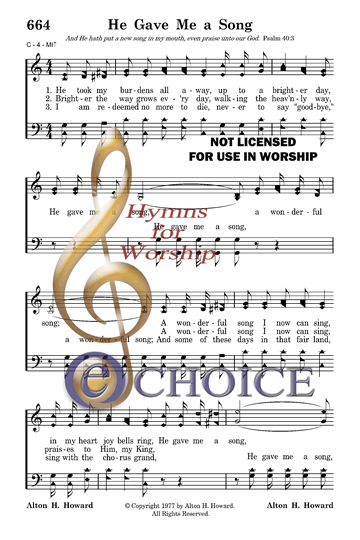

|
¡@ |
¡@ |
|
I. Stanza 1 indicates that Christ is our Savior
|
¡@He
took my burdens all away, up to a brighter day |
|
¡@ 
|
|
|
¡@ |
¡@ |
|
¡@ |
¡@ |
|
I. Stanza 1 indicates that Christ is our Savior
|
¡@He
took my burdens all away, up to a brighter day |
|
¡@ 
|
|
|
¡@ |
¡@ |
¡§And He hath put a new song in my mouth, even praise unto our God¡¨ (Ps. 40:3)
INTRO: A song which refers to the new song of praise to our God which the Lord has put into our mouths is ¡§He Gave Me a Song¡¨ (#664 in Hymns for Worship Revised). The text was written and the tune was composed both by Alton Hardy Howard (1925-2006). The song was copyrighted in 1977 by Howard and first published in the 1977 edition of his popular hymnbook, the 1971 Songs of the Church. Other Howard songs in Hymns for Worship Revised include ¡§There¡¦s a Rainbow in the Cloud¡¨ and ¡§I Believe in Jesus.¡¨ Among other hymnbooks published by members of the Lord¡¦s church for use in churches of Christ, ¡§He Gave Me a Song¡¨ has also appeared in the 1990 Songs of the Church 21st C. Ed. and the 1994 Songs of Faith and Praise both edited by Howard; the 1992 Praise for the Lord edited by John P. Wiegand; the 2007 Sacred Songs of the Church edited by William D. Jeffcoat; and the 2009 Favorite Songs of the Church and the 2010 Songs for Worship and Praise both edited by Robert J. Taylor Jr.; in addition to Hymns for Worship.
The song is filled with praise to Jesus as our Savior, King, and Redeemer.
I. Stanza 1 indicates that Christ is our Savior
He took my burdens all away, up to a brighter day,
He gave me a song, a wonderful song;
A wonderful song I now can sing, in my heart joy bells ring,
He gave me a song, a wonderful song.
A. Jesus is our Savior because He took our burdens all away by bearing our sins on the cross: 1 Pet. 2:24
B. Thus, we have a wonderful song that we can sing to praise Him: Jas. 5:13
C. This song is an expression of the joy that is in our hearts: Phil. 4:4
II. Stanza 2 refers to Christ as our King
Brighter the way grows every day, walking the heavenly way,
He gave me a song, a wonderful song;
A wonderful song I now can sing, praises to Him, my King,
He gave me a song, a wonderful song.
A. Jesus is the heavenly way that grows brighter every day: Jn. 14:4-6
B. Through Him, we offer the sacrifice of praise which is the fruit of our lips: Heb. 13:15
C. In doing so, we acknowledge Him as our King: Rev. 19:16
III. Stanza 3 identifies Christ as our Redeemer
I am redeemed no more to die, never to say ¡§goodbye,¡¨
He gave me a song, a wonderful song;
And some of these days in that fair land, sing with the chorus grand,
He gave me a song, a wonderful song.
A. Christ has redeemed us: Gal. 3:13
B. As our Redeemer, He will someday take us to that fair land where He is: Jn. 14:1-3
C. There, we shall sing with the chorus grand: Rev. 5:8-10
CONCL.: The chorus then reminds us that because of these facts, we should sing to Him
He gave me a song to sing about,
He lifted me, from sin and doubt;
Oh, praise His name, He is my King;
A wonderful song He is to me.
I don¡¦t wish to harp too much on this subject, but one of the usual characteristics of English hymn poetry is rhyme. A song isn¡¦t unscriptural if it doesn¡¦t rhyme, but it usually sounds better and makes a little more sense if it does. In the chorus, the first two lines rhyme (about/doubt), but the last two don¡¦t (King/me). Perhaps Howard wanted to emphasize not only that Jesus gave us a song but also that He is our song. But it would have been so easy to make that last line read, ¡§A wonderful song I now can sing.¡¨ In any event, the song has a good sentiment, exudes a cheery disposition, and is set to a catchy tune. No matter what happens in life, if I am in Christ I need to remember that ¡§He Gave Me a Song.¡¨
¡@https://hymnstudiesblog.wordpress.com/2021/02/09/he-gave-me-a-song/
|
Alton Hardy Howard
|
|
|---|---|
| Born |
March 28, 1925
Rocky Branch Community
Union Parish, Louisiana, United States |
| Died | October 29, 2006 (aged 81) |
| Resting place | Rocky Branch Cemetery in Union Parish |
| Nationality | American |
| Occupation |
Businessman co-founder, Howard
Brothers Discount Stores |
| Relatives |
Brothers:
V. E. Howard |
Alton Hardy Howard (March 28, 1925 ¡V October 29, 2006) was a businessman, author, and a gospel songwriter from West Monroe in Ouachita Parish in northeastern Louisiana.
Howard was the sixth of seven children born in the Rocky Branch community near Farmerville in Union Parish in North Louisiana, to a Church of Christ couple, Elisha John "Hardy" Howard (1889¡V1974) and the former Corinne Smith (1888¡V1971). Older brother Verna Elisha Howard was a Church of christ clergyman for more than four decades who founded the Texas-based International Gospel Hour. Still another older brother, W. L. "Jack" Howard, was Alton's business partner and the mayor of Monroe from 1956 to 1972 to 1976 to 1978. The youngest of the Howard siblings, Kelton Leroy Howard (1928¡V1994), died exactly two weeks after the passing of Jack Howard.[1] Howard was predeceased by two sisters, Euphra H. Terry (1914¡V1980) and Cassyle H. McMurry (1918¡V1989).[2]
During World War II, Howard served in the Ninth Air Force and flew twelve missions over Germany as a gunner on a B26 bomber.[3]
In 1946, Alton and Jack Howard co-founded Howard Brothers Jewelers; in 1959, the regional chain, Howard Brothers Discount Stores. In 1969, he started Howard Publishing Company and, along with his son, John Howard, launched in 1984 Super Saver Wholesale Warehouse Club. Howard further owned an insurance agency, several restaurants, clothing stores, oil and gas operations, and his music business. He also developed several subdivisions[2]
He was one of the founders and a longtime elder (1963¡V2004) of the White's Ferry Road Church of Christ in West Monroe. In 1967, he established Camp Ch-Yo-Ca, a Christian youth camp. He wrote several books and gospel songs. His Howard hymnals have sold more than three million copies and are used in churches worldwide.[4][5] Howard worked to establish "World Radio", an international ministry which broadcasts the gospel of Jesus Christ in native languages.[2]
Howard was married to the former Mamie Jean Meador (1927¡V2013), a native of Arkadelphia, Arkansas, and the daughter of Ben and Willie Meador. In addition to son John and his wife Chrys (parents of Korie Robertson, the spouse of the aforementioned Willie Robertson) the Howards had two daughters¡X Mary Howard Owen (whose husband is Mac) and Janice Howard Owen (with husband David). Alton and Jean Howard are interred with his primary family members, except for brother Jack Howard, at the Rocky Branch Cemetery in Union Parish.[2][6]
According to Dave Norris, the mayor of West Monroe since 1978, Howard was
State Senator Mike Walsworth of West Monroe, then a state representative, described Howard as "one of the founders of modern West Monroe ... and a great businessman in our community."[5]
Howard published the following books and hymnals:
Hymns he wrote include:
https://en.wikipedia.org/wiki/Alton_Hardy_Howard
¡@